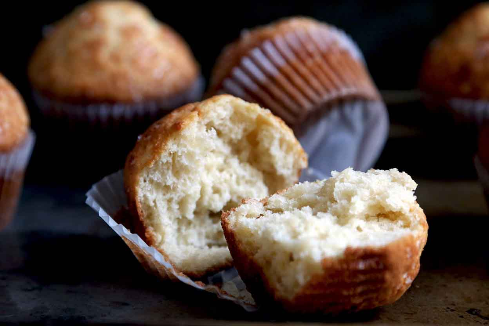

Recipe: Basic Muffins
This recipe is a taking-off point; use it to create your own favorite muffins by adding fruits and flavorings, nuts and vegetables, or substituting various grains. Muffins, being so easy and quick to make, are wonderful for experimenting. For instant gratification, of both the taste buds and the creative spirit, nothing beats a muffin!
Ingredients
- 2 cups flour
- 1/2 cup sugar
- 1/2 teaspoon salt
- 1 tablespoon baking soda
- 1 cup milk
- 1/4 cup melted butter
- 2 eggs
- 1 teaspoon vanilla extract
Instructions
- Preheat oven to 425°F.
- Grease cups of a 12-cup muffin pan with butter, or use paper liners.
- Blend together dry ingredients.
- Blend together wet ingredients in a separate bowl.
- Pour wet ingredients into dry ingredients. Gently mix together. (Do not overmix!)
- Fill muffin cups 2/3 - 3/4 full.
- Bake muffins for 15 - 20 minutes.
- Turn out onto wire rack to cool.